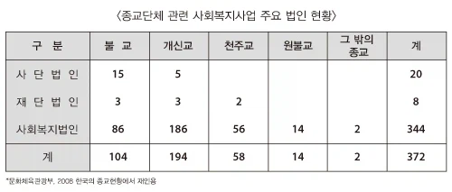
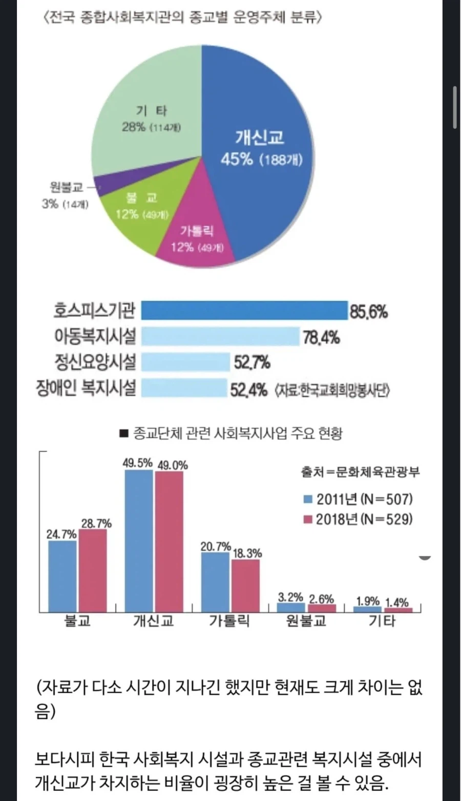
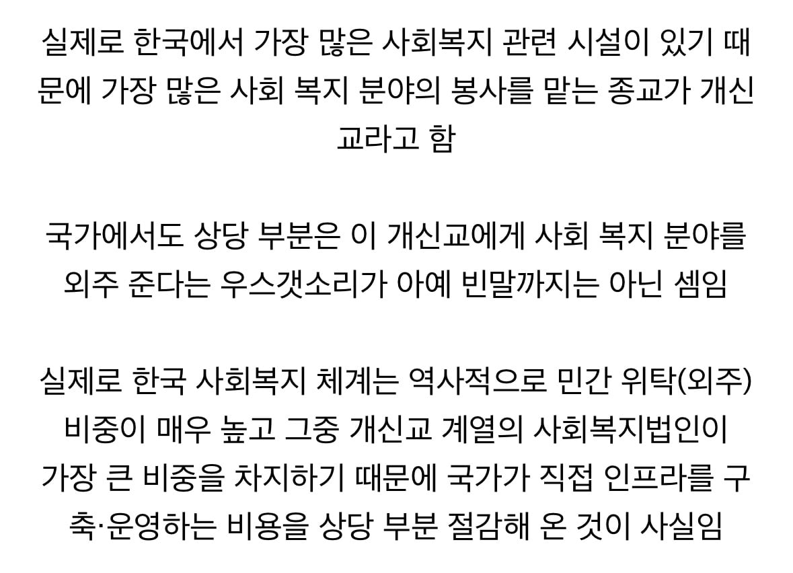

고마워 하지는 않아도 되는데 굳이 찾아서 욕하지는 말아야지
영리를 위해 장사하면서
뭔 봉사라고 구라치니까 욕을 하는 거임
병신앰생새끼
https://www.dogdrip.net/dogdrip/736590877?_filter=search&search_target=title_content&search_keyword=%EC%9D%BC%EB%B3%B8&page=
딱 이런새끼네
원래 종교가 역사적으로 복지 담당이긴 했음. 현대에와서 국가 복지라는 개념이 커져서 종교 역할이 줄어든거긴 하지.
그 유명한 인간 도살장 형제복지원이
실로암교회 장로가 원장이던 개신교계 복지시설이었음
그 유명한 해병대 총기난사 사건 가혹행위 가해자가
너처럼 개신교에 억하심정 갖고 성경 불태우고 후임병 괴롭히던 놈이었음
하느님 앞에 당당하면 넌 바코드닉부터 고쳐라
개신교가 문제였네
시스템적인 조직범죄랑
성격파탄자의 개인적 일탈 구분이 안됨?
교세를 늘리려는 잿밥이 목적인거 뻔히 알지만
일단 인정할 건 해줘야 하지 않나?
위선도 선이다 그런건가?
알렐루야 합티즘?
전도 목적 아니면 괜춘
유사 신천지놈들 꾸역꾸역 기어나오는거 봐라 ㅋㅋ
좋은 일 많이하는 교회도 확실히 많음
봉사활동 가보면 복지관 사람들이 평소에 진짜 노인분들에게 잘해드리는지 복지관에서 방문했을때 항상 고맙다며 활짝 웃으며 맞이해주는 분들이 많던데
사실 일상생활 하다보면 진짜 봉사하는 사람들을 보기란 쉽지가 않고 길에서 좆같이 전도하고 십일조 반드시 내라고 세뇌하는 인간들만 천지라 그런 면에선 안타깝긴 했음
왜냐면 진짜 봉사하러 다니시는 분들은 전도를 목적으로 생활하지 않기 때문임
본인의 신념이나 믿음을 주변사람에게 알리거나 강요하지 않고 그냥 평범한 우리의 이웃으로 지내다 개인적인 시간을 이용해서 봉사하러 다니는 경우가 많으니 일상적인 사회생활에서의 접점이 낮을 수 밖에 없음
과몰입해서 아예 정병수준까지 간 사람들이 분위기 파악도 못하고 그냥 전도만 생각하고 라포형성도 없이 예수쟁이처럼 하고 다니니까 ㅈ같은거고 대부분의 정상적인 교인들은 일상생활에서 크게 티 안냄
주말에 뭐하냐는 가벼운 질문에 봉사다녀요 하는 가벼운 대답이나
우리가족은 개신교라 이번명절에 가족끼리 모여서 해외여행 가기로 했어 딱 이정도로 티내는게 끝일정도
본글 다 동의함.
근데 국가가 커지면서 종교의 역할이 많이 작아졌고..
특정 사이비를 자정작용 할 수가 없는게 문제 ㅇㅇ
개신교가 암만 욕을 쳐먹어도 저런거보면은 아직까진 사회에 순기능이라고 생각함
특히나 지방이나 시골에는 커뮤니티기능까지 담당하고 있음
개신교가 없었으면 다른 게 역할을 했을거다
좋은 일 하는 거 어느정도 인정은 하는데
개신교 없었음 큰일나는 거였다 오바하면 보기 싫어
쟤네가 돈 안되는 일을 할리가 없는데...
돈 안됨 대부분 적자거나 간신히 흑자보면서 운영함.
현실과 괴리된 정부보조금과 수가 + 그마저도 항상 밀리는 정부의 돈 지급(특히 의료급여) + 치솟된 인건비 + 점점 많아지는 규제와 탈시설화정책
= 그래서 못 버티고 복지시설 하나 둘 문닫고 있음
좋은일하시는분도 분명 많은데 그런분들도조명 됐으면좋겠음
그래서? 개신교에 고마워 하라고?
나이 많아 취업하기 어려운 노인들을
저임금으로 부려먹으며 돈은 아끼는데
정부 돈은 따박따박 받아먹고
심지어 공익근무요원 공짜로 부려먹는 곳이
바로 복지시설임